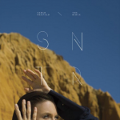

Sarah Neufeld The Ridge
(Paper Bag Records)
While violinist Sarah Neufeld is known to many as part of Arcade Fire, she started building a name for herself with the gorgeous solo debut Hero Brother in 2013. Her follow-up record, The Ridge, is Neufeld in IMAX, a wide-ranging, epic soundscape that's created just with her violin, occasional rhythms and a few impressionistic vocal melodies.
The scope of this album is clear from the get-go, with a title track that feels like infinity. Neufeld's violin strings are taunt and sweeping, the sound of flying over the desert with no end in sight. With the addition of her voice comes a new layer of texture, which works to great effect, as does the boisterous percussion from her Arcade Fire bandmate Jeremy Gara. While the song doesn't change much, it continuously builds over its eight minutes in a way that you never want to end.
The Glow is similarly ambitious. Its finger-picked introduction gives the feeling of waking up at dawn, slowly returning to consciousness as the sun peeks through your blinds. On a track like this, you don't need vocals. The picked strings are more than enough to create a mesmerizing melody. The song also does a great shift towards the end, with a foreboding bass line and gusts of wind bringing dark clouds over this glow.
Even tracks that may not seem as far-reaching still easily pull you into another world. We've Got a Lot sounds like it should be on a Final Fantasy soundtrack, built for an adventure with its tense but bright strings, jazzy drums and rumbling bass. They All Came Down seems like a quick interlude, but instead focuses on a beautiful, airy vocal from Neufeld.
As the album progresses, Neufeld stretches her muscles and puts on a tour-de-force with her violin. A Long Awaited Scar has a darker, on-edge string melody that fits the title. While the first half in centered on Neufeld playing like a woman possessed, she transitions suddenly into a thrilling action scene, like climbing a steep hill only to find a battle erupting on the other side. From Our Animal is equally kinetic, with Neufeld branching out in several directions, but always returning to a core refrain.
Where the Light Comes In is a sublime, slightly melancholy affair that slows things down, a closing scene for the magnificent journey we've just been through. Neufeld's violin cuts through the silence, its sharp cries echoing outwards, only to be joined by a bass that rumbles like ocean waves. It is the sound of standing on the titular ridge, watching the sun set and the light fade out.
If Hero Brother was Neufeld getting her feet wet, then on The Ridge, she's diving into the deep end of the pool. The talent, confident and imagination on display throughout this album makes it a must-listen, a chance to let your mind wander and to lose yourself in an incredible plangency of strings.
7 March, 2016 - 04:58 — Joe Marvilli